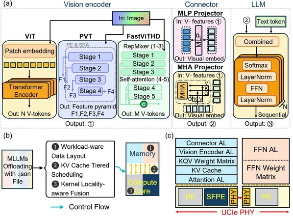
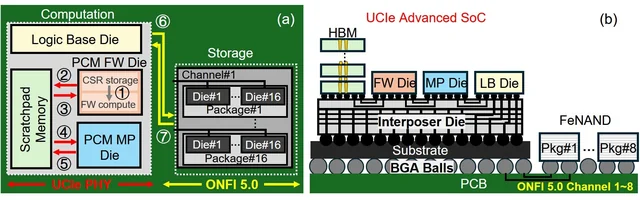
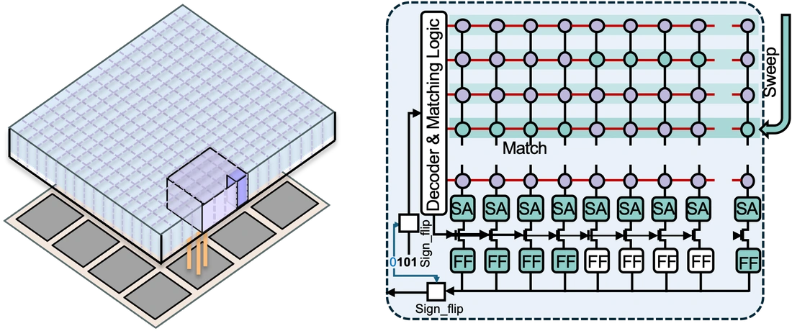

CHIME: Chiplet-based Heterogeneous Near-Memory Acceleration for Edge Multimodal LLM Inference
DATE 2026 [PDF]
M3D DRAM attention engines and RRAM feed-forward engines with reuse-aware KV placement and kernel fusion.
Ph.D. Candidate, Electrical and Computer Engineering
University of California San Diego
yac054@ucsd.edu / Google Scholar / LinkedIn / GitHub / CV
I am a Ph.D. candidate at UC San Diego, advised by Prof. Tajana Rosing in the Systems Energy Efficiency Lab. My research focuses on computer architecture and hardware–software co-design, including heterogeneous memory, processing-in-memory, and efficient AI systems.
My recent work covers agentic AI inference, edge LLM acceleration, graph dynamic programming, and computational storage. I was an Emerging Memory AI Infrastructure Intern at SK hynix in summer 2026. I received my M.S. from Tsinghua University and B.E. from Jilin University.
I am seeking full-time positions in computer architecture, AI systems, and memory systems. Expected graduation: June 2027.
PALUTE accepted to ISLPED 2026.
* Equal contribution. Full publication list on Google Scholar.

DATE 2026 [PDF]
M3D DRAM attention engines and RRAM feed-forward engines with reuse-aware KV placement and kernel fusion.

DAC 2026 [PDF]
Hyperdimensional predicate encoding and FeNAND search cores bring SQL filtering, decoding, and aggregation closer to storage.

DATE 2026 [PDF]
Recursive partitioning and PCM min-plus operations for exact all-pairs shortest paths, with pipelined reductions and selective updates.

M3D DRAM near-memory table generation, in-DRAM lookups, and tier-aware placement for edge LLM inference.
Under review · ASPLOS 2027
A heterogeneous CPU/GPU system with M3D DRAM and FeRAM, co-designed with hierarchical scheduling for agentic AI inference.
Under review · IEEE TCAD [PDF]
PCM matrix tiles and HBM traversal tiles support diverse graph dependencies and sequence-alignment computation.
Graduate Researcher · Advisor: Prof. Tajana Rosing
Developing memory-centric architectures for LLM inference, graph dynamic programming, and database queries through hardware–software co-design.
Emerging Memory AI Infrastructure Intern · San Jose, CA
Co-designed a heterogeneous CPU/GPU and memory system for agentic AI. Built simulation and GPU-profiling infrastructure for system-level evaluation.
Worked on memristor fabrication and a multimodal sensing glove, with a focus on MEMS/NEMS fabrication and biomedical signal processing.
Developed wearable acetone gas sensors for breath analysis and laser-induced graphene flexible strain sensors, combining semiconductor devices, materials, and microfabrication.
Algorithm Intern · Department of Algorithm. Developed OCT imaging methods integrating near-infrared spectroscopy with machine learning for lipid imaging.
Through MITACS at University of Western Ontario, I contributed to a neuroscience project using texture analysis to extract microvascular signals from mouse heart videos and reconstructed 3D images—enabling cardiac blood flow heterogeneity diagnosis.
Presented two papers at EMBC 2020: “Quantifying Microvascular Alterations Due to a Pharmacological Agent” and “Fractal Dimension-Based Texture Analysis of CT Perfusion Imaging.”
Visited School of Mathematical Sciences and School of Electrical & Electronic Engineering at NUS and NTU. Attended lectures on advanced semiconductor materials and had discussions with professors. Experienced Singapore culture.
Attended workshops on micromaterials and devices at HKU, HKUST, and CityU. Learned from Prof. Li-Hsing Chen on brain-machine interfaces, visited 5G research labs, and saw MIT Robotics Atlas demonstration. This experience broadened my interdisciplinary research perspective.
Ph.D. in Electrical and Computer Engineering · Expected June 2027
Advisor: Prof. Tajana Rosing · Advanced to candidacy March 2026
M.S. in Electronic Information (Intelligent Manufacturing)
B.E. in Electronic Science and Technology · College Honors
Rank: 6 / 108
PRISM review
Computer Science and Engineering, UC San Diego
The Chips to Systems Conference
Workshop on Learning and Information Theory
University of California San Diego
Jilin University
Jilin University
Western University
Research mentoring: Abhinandan Sharma, M.S. student in ECE, UC San Diego (Oct 2026 – Present). Literature guidance and experimental-design feedback on GPU frequency, KV-cache capacity, and energy-aware agentic LLM serving.
Reviewer: IEEE Transactions on Circuits and Systems I: Regular Papers, 2026.